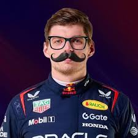
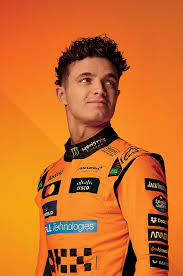

kép származása
Max Verstappen
Max Emilian Verstappen 1997. szeptember 30-án
született Belgiumban, de holland színekben versenyez. Édesapja,
Jos Verstappen korábbi Forma–1-es pilóta, így Max
már gyerekkorától a versenyzés világában nőtt fel.
Verstappen 2015-ben, mindössze 17 évesen debütált a
Scuderia Toro Rosso csapatnál, ezzel ő lett a
valaha volt legfiatalabb F1-versenyző. Kiemelkedő tehetségét hamar
bizonyította: már 2016-ban a
Red Bull Racing pilótájaként megszerezte első
győzelmét a Spanyol Nagydíjon – szintén rekord fiatalon.
Azóta Verstappen a sportág egyik legnagyobb alakjává nőtte ki magát.
Hihetetlen gyorsasága, agresszív, de pontos vezetési stílusa és
rendkívüli versenyintelligenciája révén több világbajnoki címet is
nyert (2021, 2022, 2023, 2024). Dominanciájával és higgadt
hozzáállásával új korszakot nyitott a Forma–1-ben.
A Red Bull Racing csapatával alkotott párosa az
utóbbi években szinte megállíthatatlanná vált, köszönhetően a
Honda motor erejének és a kiváló aerodinamikai
fejlesztéseknek.
Max Verstappen neve ma már egyet jelent a
gyorsasággal, precizitással és győzni akarással – a
modern F1 egyik meghatározó figurája, akit sokan a sport
történetének egyik legjobb pilótájaként tartanak számon.

kép származása
Lando Norris
Lando Norris 1999. november 13-án született
Bristolban, az Egyesült Királyságban. Már fiatalon megmutatta
tehetségét az autósportban: kartingban több bajnoki címet is
szerzett, mielőtt az autós sorozatokban is villámgyorsan felfelé
haladt a ranglétrán.
2017-ben megnyerte az
Európai Formula 3 bajnokságot, majd a következő
évben a McLaren tartalékpilótája lett. 2019-ben
debütált a Forma–1-ben a McLaren színeiben, és rögtön lenyűgözte a
nézőket higgadtságával, technikai tudásával és humoros
személyiségével.
Norris a fiatal generáció egyik legígéretesebb versenyzője. A pályán
rendkívül gyors, következetes és keményen dolgozik, miközben a
pályán kívül is rendkívül népszerű a rajongók körében – főként
közvetlen, barátságos stílusa miatt.
Az utóbbi években Lando a McLaren egyik meghatározó
alakjává vált, és a csapat fejlődésének kulcsszereplője. Többször is
dobogóra állhatott, és sokan úgy vélik, hogy idő kérdése, mikor
szerzi meg első Forma–1-es győzelmét.
Lando Norris neve ma már egyet jelent a
kitartással, profizmussal és fiatalos lendülettel –
ő az egyik legnagyobb reménység a jövő Forma–1-es világbajnokai
között.